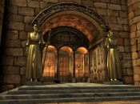
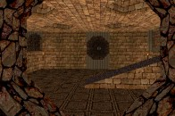
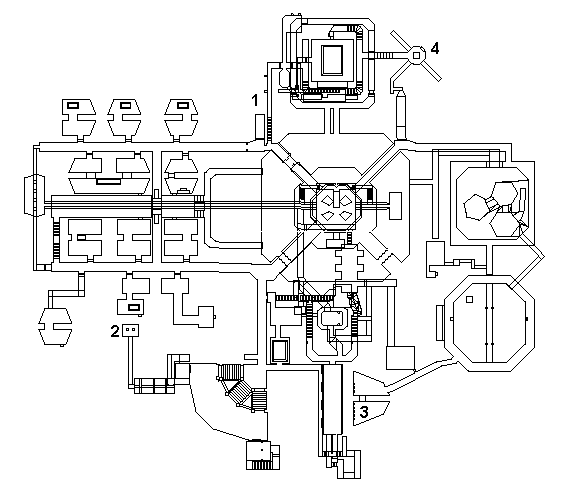

Eel Infested Waters: The Alamos
The first fortress dedicated to magical research, its remote location provided secrecy for the mages and protection for the populace in the event of an accident.


| Alamos, Eel Infested Waters | |
| 1. | Entrance |
| 2. | The Memoy Crystal Beta is here. The password is JBARD |
| 3. | A lot of good treasures, books, gems, gold. |
| 4. | A transporter to Silver Cove. |
There are a ton of ememies here, Wizards, Matrons, and Air Elemntals. To totally clean out this dungeon will take a while. It is one of the biggest around.
I would suggest that you have Lloyd's beacon, use it and go to New Sorpigal to heal yourself, you wil need to often. The teleporter requires a key that you find in a chest. Some doors will not open without you having the guy carrying the memory crystal highlighted.
Leave us a message mgrounds@hotmail.com